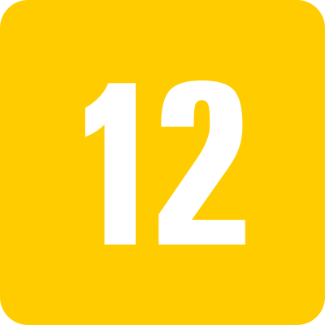

Wandinha
Wandinha" é uma série de comédia e drama que segue a vida da filha mais nova da família Addams,
Wandinha (Jenna Ortega),
enquanto ela tenta equilibrar sua vida escolar com os segredos sombrios de sua família.
Ela frequenta a misteriosa Nevermore Academy, onde investiga mistérios estranhos e tenta desvendar os segredos obscuros de sua família,
tudo enquanto navega pelos altos e baixos da adolescência.
A série é um spin-off da icônica franquia "A Família Addams" e tem um tom de humor negro e visual gótico.
Os pais de Wandinha, Gomez (Luis Guzmán) e Morticia (Catherine Zeta-Jones),
também lutam com seus próprios demônios pessoais enquanto tentam proteger sua família da ameaça desconhecida que paira sobre eles.
Com uma combinação envolvente de elementos sobrenaturais e personagens excêntricos,
"Wandinha" oferece uma visão nova e emocionante do universo dos Addams, explorando temas como amor, família e identidade.
A série é uma experiência misteriosa e empolgante,
que manterá o espectador preso à tela do começo ao fim.
Onde assistir? Netflix
Gêneros:dramática, suspense e terror
Autores:Alfred Gough e Miles Millar, Charles Addams.
Criadores: Alfred Gough Miles Millar
Temporadas:1
Lançamento:16 de novembro de 2022(EUA)
Cada Eu acredito que a série tenha tido um grande impacto na cultura popular,
influenciando muitas outras produções de comédia e fantasia que vieram depois dela.
Além disso,
a série foi adaptada para o cinema e também para outras mídias,
como jogos de videogame e livros.
A série original foi exibida na década de 1960 e apresenta a família Addams,
que é uma família excêntrica e macabra, mas também amorosa e unida.
Embora a série seja baseada em elementos sombrios e até mesmo macabros,
ela é bastante engraçada e apresenta muitas situações absurdas e hilárias..
Avalie
Reviews dos usuários
Wallace
★★★★★
Adorei essa série! É muito legal, cheia de referências e te prende do início ao fim. O final me surpreendeu muito pois era das pessoas que eu menos suspeitava que afinal era a grande vilã da série! O elenco atuou impecavelmente, muitos parabéns á Jenna Ortega, ela realmente sabe atuar muito bem! Adorei a parte dela dançando com O Tyler, foi realmente uma coreografia incrível improvisada pela própria atriz! Adorei esta série e quero já a segunda temporada!!!
Walter
★★★★★
Amei a série, ela é uma obra única, e, com a wandinha nela, põe a palavra ÚNICA em negrito. Amei o humor sombrio da protagonista, o visual da série é gostoso de assistir pois mistura caracteristicas modernas com o rústico, o colorido com o neutro, mas tudo bem suave. A história foi incrível em enganar os telespectadores, mesmo sendo um pouco clichê ela conseguiu nos fazer criar muita teorias. Assisti com a minha esposa Skyler e ela adorou tambem. Efim, 5 estrelas
Pessoa 3
★★★★★
Review
Pessoa 4
★★★★
★
Review